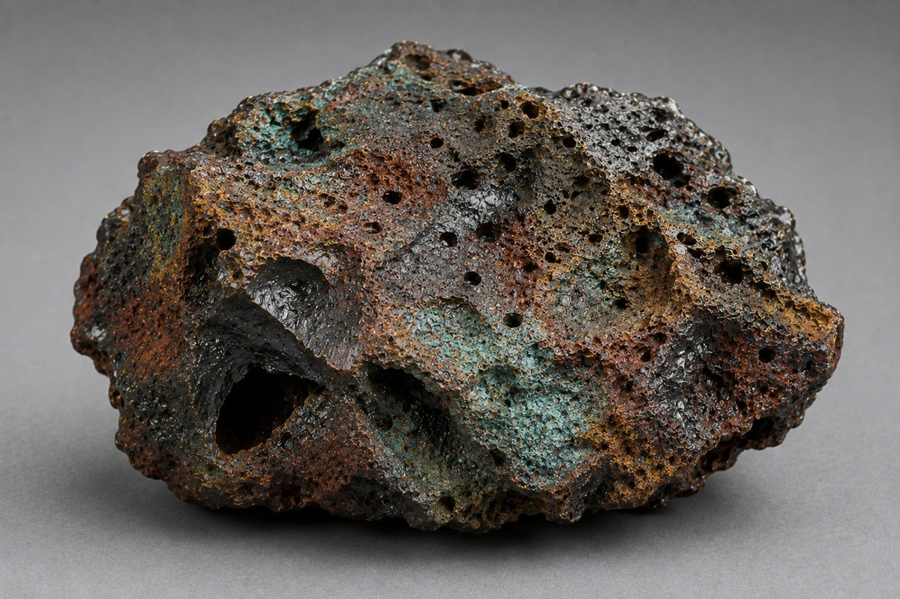
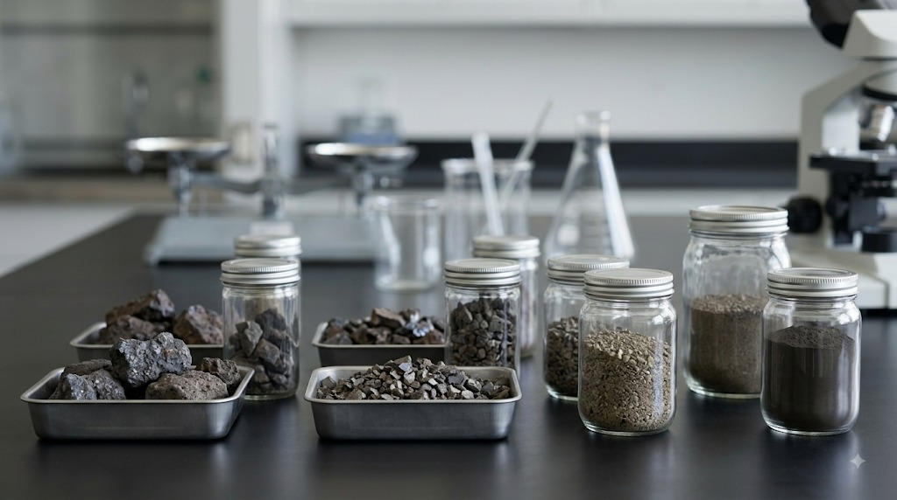

Оценка отвала строится на сочетании физических и химических методов исследования. К обязательным относятся зерновой состав, содержание металлических включений, прочность и насыпная плотность. Повышенная истинная плотность косвенно указывает на наличие металлической фазы в ферросплавных отходах.
Для медных шлаков необходим фазовый анализ — микроскопия и рентгеновская дифракция, — чтобы отличить сульфидную медь от оксидной. Экспресс-оценка состава возможна с помощью портативных анализаторов, но их данные являются предварительными.
Типичная ошибка — ограничиваться только химическим составом без учёта неоднородности отвала. Мы начинаем с анализа вашего материала, который выполняет независимая лаборатория по нашей программе.


R. Keren работает со всеми вторичными металлургическими материалами. Схема переработки определяется свойствами конкретного материала и подтверждается лабораторно в ходе работы по проекту — это рабочий шаг, а не ограничение по номенклатуре.
Любой проект начинается с данных, а не с предположений.
Прислать данные о вашем материале
Оборудование и зоны ответственности · Все вопросы промышленника